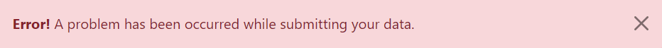

- ¿ Que es Bootstrap ? -
Bootstrap es un framework CSS desarrollado por Twitter en 2010, para estandarizar las herramientas de la compañía.

Inicialmente, se llamó Twitter Blueprint y, un poco más tarde, en 2011, se transformó en código abierto y su nombre cambió para Bootstrap. Desde entonces fue actualizado varias veces y ya se encuentra en la versión 4.4.
El framework combina CSS y JavaScript para estilizar los elementos de una página HTML. Permite mucho más que, simplemente, cambiar el color de los botones y los enlaces.
Esta es una herramienta que proporciona interactividad en la página, por lo que ofrece una serie de componentes que facilitan la comunicación con el usuario, como menús de navegación, controles de página, barras de progreso y más.
Además de todas las características que ofrece el framework, su principal objetivo es permitir la construcción de sitios web responsive para dispositivos móviles.
Esto significa que las páginas están diseñadas para funcionar en desktop, tablets y smartphones, de una manera muy simple y organizada.
- ¿ Cómo funciona Bootstrap ? -
Bootstrap está constituido por una serie de archivos CSS y JavaScript responsables de asignar características específicas a los elementos de la página.
Hay un archivo principal llamado bootstrap.css, que contiene una definición para todos los estilos utilizados. Básicamente, la estructura del framework se compone de dos directorios:
- css: contiene los archivos necesarios para la estilización de los elementos y una alternativa al tema original.
- js: contiene la parte posterior del archivo bootstrap.js (original y minificado), responsable de la ejecución de aplicaciones de estilo que requieren manipulación interactiva.
Para asignarle una característica a un elemento, simplemente debemos informar la clase correspondiente en la propiedad “class” del elemento que será estilizado.
- ¿ Cuál es la funcionalidad de Bootstrap ? -
Bootstrap ofrece una serie de características que se pueden implementar en un sitio web. A continuación hablaremos de las posibilidades de esta herramienta.
Diseño responsive
Una de las características principales de Bootstrap es permitir que la adaptación de la página se realice según el tipo de dispositivo utilizado. Para garantizar la responsividad, el framework funciona con:
- la estilización del elemento <div>
- el uso del class container.
En la práctica, el elemento <div>, funciona para crear una serie de notas, similar a una tabla, capaz de estructurar la página de forma adaptable.
Ya hubo un intento de utilizar tablas para crear diseños responsivos, sin embargo existían limitaciones para definir la longitud de las columnas lo que hizo imposible su uso en dispositivos más pequeños, como smartphones.
El elemento <div> es más flexible, ya que permite definir y cambiar el tamaño de la longitud fácilmente.
Bootstrap le ha asignado al elemento <div> una característica de class container, que funciona para determinar las dimensiones apropiadas para los elementos insertados en ese espacio.
Básicamente, o framework funciona con tres tipos de containers:
- Container: como un conjunto con una propiedad de ancho máximo, que determina qué tamaño de tela es ideal para crear el diseño de página.
-
Container-{ breakpoint}: considera width —100% hasta alcanzar un cierto tamaño—.
-
Container-{ breakpoint}: considera width —100% hasta alcanzar un cierto tamaño—.
- Biblioteca de componentes -
Otra interesante función de este framework es la cantidad de componentes que pueden ser usados para proporcionar una mejor interacción y perfeccionar la comunicación con el usuario.
Enseguida mencionaremos los principales.
Alertas
Bootstrap permite una configuración simple y rápida de diferentes tipos de alertas, con colores específicos, según la situación.
Para mostrarle al usuario un alerta que indique atención, por ejemplo, simplemente debemos usar .alert-danger y aparecerá un cuadro de texto con un fondo rojo:

Carrusel
Un componente ampliamente utilizado en Bootstrap es el Carrusel, una presentación de diapositivas, es decir, una herramienta que permite la visualización de imágenes de manera receptiva.
También permite la inclusión de efectos especiales para la transición de imágenes y controles de visualización, como por ejemplo los indicadores de “siguiente” y “anterior”.
Barra de navegación
Otro poderoso componente de la estructura es la NavBar (barra de navegación), que permite la construcción de un sistema de navegación sensible.
Es posible configurar diferentes formas de presentar el menú, elegir entre posicionamiento lateral o superior y, también, definir una forma de visualización que se pueda extender o contraer.
También es posible determinar cómo mostrar los enlaces del menú, que pueden ser en forma de botón, enlace, menú suspenso, entre otras configuraciones, para facilitar la implementación de la navegación del sitio.
- ¿Cómo descargar Bootstrap? -
Hay diferentes formas de descargar este framework. Una de ellas es descargando la versión compilada de los códigos CSS y JavaScript en la página de Bootstrap.
También hay una opción para descargar el código fuente del framework, puesto que es una herramienta de código abierto.
Aquellos que no quieran descargar los archivos pueden acceder a la estructura sin necesidad de instalarlos en el servidor. En la práctica, los archivos de instalación están en otro dominio, o sea en otro DNS.
Para eso, tan solo debemos usar los enlaces para acceder o Bootstrap CDN y, de esa forma, agregarle las referencias a los archivos necesarios para su uso.
Otra forma de descargar el framework es a través de los administradores de paquetes. Es importante decir que Bootstrap se puede usar con diferentes lenguajes de programación.
Por esta razón, puede ser descargado como npm, desde Node.js, con RubyGems, Composer o Nuget, y usarse para crear un sitio web en WordPress, en sitios desarrollados en Ruby on Rails, Asp.Net, etc.